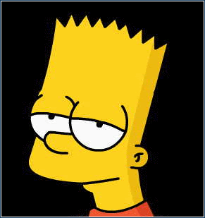

(<)meta name="viewport" content="width=device-width, initial-scale=1.0" //„reszponzív” izálja a méret
//ha 1.0 az a 100% windows ablakban(>)
//felhasználó
álltal látható része
//viewport= maga az balak szélessége
(<)meta meta tegeket nem kell lezárni a HTML5 szabvány szerint előzőkbe kötelező volt "/(>) "
(<)title(>) title szöveg (<) /title(>)
(<) /head(>)
(<)body(>)
ami megjelenik a böngészőben
(<)p(>) bekezdés (<)br(>) sortörés (<)br(>) (<)br(>) (<)br(>) annyi sort hagy ki ahány sortörés van(<) /p(>)
(<)u(>) aláhúzott szöveg (<) /u(>) (<)i(>) dölt (<) /i(>) (<)b(>)
félkövér (<) /b(>) (<)strong(>) erős hasonló a félkövérhez(<) /strong(>)
két fajta lista van van az (<)ol(>) a számozott lista
és a
bekezdés sortörés
annyi sort hagy ki ahány sortörés van
aláhúzott szöveg
ma reggel keltem
dölt félkövér erős hasonló a félkövérhez szemantikusan segíthet áthúzott szöveg, nem érvényes szöveg
kissebb betük
felső index
horizontális vonal (vigyázat ne tedd a végére )
alsó index
kimelet szöveg (sárgával) (internet 8 nem támogatja)
idézet szerű felírás
vékonyan aláhúzott javitott tartalom megjelölése
helyette behelyetesített szöveg
efelé vidd az egeret
első címesor
második címsor
harmadik
negyedik
ötödik
hatodik?
Leírás címe
leírása a dolgonak
csavar
ezt csavarod be a falba
számozott lista
piros
sárga
kék
pötyös lista "disc" "square" "circle"
piros
sárga
kék
érdeksség ha beírod hogy tipe a "< ol type="I">" "A" "a" "i"
piros
sárga
kék
Ha számtól akarsz akkkor beírod, a < li> után, hogy vale=" szám "ű
piros
sárga
kék
ebből a videóbol tanultam
amennyiben target="_blank" akkor új oldal ként nyitja meg
annyiben e-mail-t akarsz betenni kötelező elé a malito
kép beillesztése e-mail kötelező kód megjelenítés
kísérleti helyszín
próbaszöveg
most
alsó index
kép formázás

A kép címe ... UI: A hight nem igazán működik inkább és egyébként is jobb és szebb a css
srcset más formátumba való ugyan annka a képnek való feltöletése webp google tömörítés
44:01
Weboldalnak a tényleges tartama
Csak egy darab lehet.
Egyedi tartalmmal kell rendeznie.
forum, blog, bejegyzések
Budapest jártam nyáron
fejléc